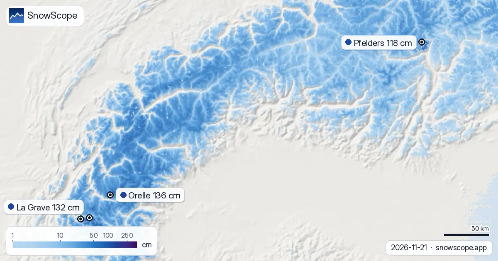

Alpe d'Huez Grand Domaine today: snow depth 92 cm (Alps, 21 November)
On 21 November, Alpe d'Huez Grand Domaine holds 92 cm of snow on its upper slopes, sitting fourth in the Alps today. Orelle takes the lead across the region with 136 cm at height, trailed by La Grave at 132 cm. Snow blankets 87,520 km² of the Alps and lies at 971 of 1,204 resorts.
See the live snow forecast for Alpe d'Huez Grand Domaine in the SnowScope appSnow depth, powder alerts and the 3D map, free.
Where the depth sits across the Alps
Alpe d'Huez sits at the shoulder of the region's leaders. Orelle, 50 km south, has pulled ahead with extra snow from the last three days. At Alpe d'Huez the total dropped by just 5 cm in 24 hours on 21 November, holding its depth steady despite the warming trend that day.
Height matters more than location. The same storm that left 92 cm on Alpe d'Huez's upper slopes (3,306 m) dropped only about 50 cm at mid-mountain (around 2,000 m) and thin coverage near the base. The steep gradient from base to summit is normal for early November in the Alps.
| Resort | Snow depth | New snow, 72 h | Coming, next days | Top |
|---|---|---|---|---|
| Orelle | 136 cm | 105 cm | 88 cm | 3,221 m |
| La Grave | 132 cm | 92 cm | 90 cm | 3,543 m |
| Pfelders | 118 cm | 15 cm | 11 cm | 2,500 m |
| Les Deux Alpes | 102 cm | 64 cm | 72 cm | 3,511 m |
| Alpe d'Huez Grand Domaine | 92 cm | 84 cm | 89 cm | 3,306 m |

Three layers of snow at Alpe d'Huez
The resort sits in three distinct snow zones. At 3,306 m (top) the depth is roughly 92 cm. Work down to around 2,000 m and snow thins to perhaps 40–50 cm. Drop to the base at 1,124 m and coverage becomes patchy and thin.
This spread explains why early-season skiers choose timing by height, not by date. High runs hold snow when lower terrain stays bare.
Real snow on the ground nearby
Three stations in the region give ground truth on 20 November. Weißseespitze (3,499 m, in Austria) measured 352 cm—a high glacier station in excellent snow. Donin du Jour (2,385 m) reported 106 cm with 33 cm that fell in one day. Trubelboden (2,459 m) showed 90 cm, with 26 cm new.
Alpe d'Huez sits between these two mid-mountain stations in elevation. The numbers confirm that snow depth jumps sharply with height in early winter.
Compared to past 21 Novembers
Alpe d'Huez does not appear in the multi-winter comparison. Orelle, the regional leader, sits at 49 cm mid-mountain (2,779 m) today versus a typical 64 cm for this date—running late, deeper than only 17 of the past 46 winters. Early November snow is thin across the Alps in most years.
La Grave tells a sharper story: 39 cm at 3,369 m today versus a normal 80 cm. Only 10 past winters had less snow on this date at that height. Even the best-stocked resorts lag their seasonal pattern so far.
What comes next
The forecast adds 89 cm across Alpe d'Huez by 24 November if systems arrive as expected. Sunday 22 November brings the heaviest influx (71 cm), with modest totals on 23 and 24 November. Timing is tight; most arrives in one day.
Freezing level on 22 November climbs to around 2,500–3,000 m—above mid-mountain but below the summit. Expect wet snow in the mid-altitude band that day, then drier cover above. By 23–24 November the air chills and snow should set up better across all heights.
What to watch before you go
Thin early snow often hides rock and grass. Stick to groomed runs and check the resort's website for which pistes are open and when. Upper slopes hold snow longest; south-facing terrain loses cover first.
The avalanche danger today sits at level 3 (considerable) across the region. Before venturing off-piste or touring, check the Météo-France BERA avalanche bulletin. Fresh snow on 22 November may alter the hazard.
Tips for skiers
- Ski high: upper slopes at 3,000 m+ have 90–100 cm. Base elevations below 1,500 m are thin and patchy in early November.
- Monday 22 November is forecast to be the richest snow day; if you can time it, that is when to be on the mountain.
- South-facing slopes shed cover fastest in early season. Chase north-facing runs for durability.
- Alpe d'Huez's mid-mountain (around 2,000 m) is the border zone: snow runs thin to bare on some slopes. Plan runs that stay high or stick to lower forest runs where coverage is more reliable.
- Early snow is loose and can hide rocks just below the surface. Ski cautiously on off-piste terrain until the new snow bonds and the base hardens.
About these numbers
Resort snow depths are the deepest snow on the resort's upper slopes on the date shown; they are estimates for an area, not a measurement at one point. Forecasts can change. Always read the official avalanche bulletin before going off-piste.
Official avalanche bulletins: Météo-France BERA
Cite this report
For research, teaching or the press: the numbers and charts are free to reuse under CC BY 4.0 with this citation.
SnowScope (2026), Alpe d'Huez Grand Domaine today: snow depth 92 cm (Alps, 21 November), https://snowscope.app/blog/en/2026/11/alps-alpe-d-huez-grand-domaine-snow-depth-today-21-november-2026.html, accessed 2026-11-21
SnowScope (Atlas Labs). (2026, November 21). Alpe d'Huez Grand Domaine today: snow depth 92 cm (Alps, 21 November). SnowScope snow reports. https://snowscope.app/blog/en/2026/11/alps-alpe-d-huez-grand-domaine-snow-depth-today-21-november-2026.html
BibTeX
@misc{snowscope2026alpsalpedhuezgranddomain,
author = {{SnowScope (Atlas Labs)}},
title = {Alpe d'Huez Grand Domaine today: snow depth 92 cm (Alps, 21 November)},
year = {2026},
month = nov,
howpublished = {\url{https://snowscope.app/blog/en/2026/11/alps-alpe-d-huez-grand-domaine-snow-depth-today-21-november-2026.html}},
note = {Published 2026-11-21 11:24 UTC; accessed 2026-11-21}
}· CC BY 4.0 · Methods, data and tools →
Alpe d'Huez Grand Domaine: snow and temperature by height, this winter vs last (tools) →
Follow Alpe d'Huez Grand Domaine
Free: a message when fresh snow is coming, and the forecast every morning.
More snow reports

Les 2 Alpes reaches 3511 m for high snow in December 2026, with an adult 6-day pass priced at 266.50 EUR.

Les 2 Alpes forecast for 23–29 November: 47 cm at 3200 m, 41 cm at 2400 m, 14 cm at base. Wednesday 25 is the peak day.

La Grave's top slopes near 3400 m will collect 49 cm in the week of 23–29 November 2026, with Wednesday 25 as the peak day. Data from 16 November.